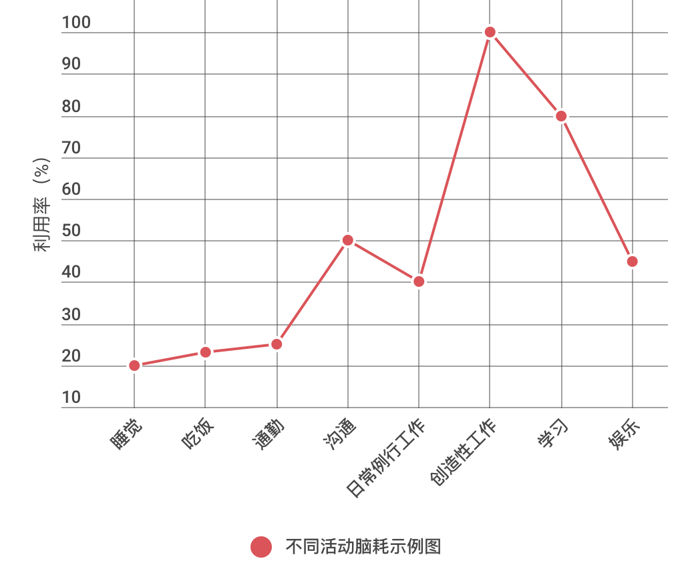

- 00 开篇词 程序行知：走在同样的路上，遇见自己的风景.md.html
- 01 初心：为什么成为一名程序员？.md.html
- 02 初惑：技术方向的选择.md.html
- 03 初程：带上一份技能地图.md.html
- 04 初感：别了校园，入了江湖.md.html
- 05 架构与实现：它们的连接与分界？.md.html
- 06 模式与框架：它们的关系与误区？.md.html
- 07 多维与视图：系统设计的思考维度与展现视图.md.html
- 08 代码与分类：工业级编程的代码分类与特征.md.html
- 09 粗放与精益：编程的两种思路与方式.md.html
- 10 炫技与克制：代码的两种味道与态度.md.html
- 11 三阶段进化：调试，编写与运行代码.md.html
- 12 Bug的空间属性：环境依赖与过敏反应.md.html
- 13 Bug的时间属性：周期特点与非规律性.md.html
- 14 Bug的反复出现：重蹈覆辙与吸取教训.md.html
- 15 根源：计划的愿景——仰望星空.md.html
- 16 方式：计划的方法——脚踏实地.md.html
- 17 检视：计划的可行——时间与承诺.md.html
- 18 评估：计划的收获——成本与收益.md.html
- 19 障碍：从计划到坚持，再到坚持不下去的时候.md.html
- 20 执行：从坚持到持续，再到形成自己的节奏.md.html
- 21 信息：过载与有效.md.html
- 22 领域：知识与体系.md.html
- 23 转化：能力与输出.md.html
- 24 并行：工作与学习.md.html
- 25 时间：塑造基石习惯（上）——感知与测量.md.html
- 26 时间：塑造基石习惯（下）——切割与构建.md.html
- 27 试试：一种“坏”习惯.md.html
- 28 提问：从技术到人生的习惯.md.html
- 29 偏好：个人习惯的局限与反思.md.html
- 30 写作：写字如编码.md.html
- 31 画图：一图胜千言.md.html
- 32 演讲：表达的技术.md.html
- 33 定义：阶梯与级别.md.html
- 34 晋升：评定与博弈.md.html
- 35 关系：学徒与导师.md.html
- 36 核心：安全与效率——工程技术的两个核心维度.md.html
- 37 过程：规模与协作——规模化的过程方法.md.html
- 38 思维：科学与系统——两类问题的两种思维解法.md.html
- 39 职业倦怠：如何面对？.md.html
- 40 局部最优：如何逃离？.md.html
- 41 沟通之痛：如何改变？.md.html
- 42 技术停滞：如何更新？.md.html
- 43 无法实现：困扰与反思.md.html
- 44 完成作品：理想与现实.md.html
- 45 代码评审：寄望与哀伤.md.html
- 46 人到中年：失业与恐惧.md.html
- 47 该不该去创业公司？.md.html
- 48 该不该接外包？.md.html
- 49 技术干货那么多，如何选？.md.html
- 50 技术分歧，如何决策？.md.html
- 51 技术债务，有意或无意的选择？.md.html
- 52 选择从众，还是唯一？.md.html
- 53 选择工作，还是生活？.md.html
- 54 侠客行：一技压身，天下行走.md.html
- 55 江湖路：刀剑相接，战场升级.md.html
- 56 御剑流：一击必杀，万剑归心.md.html
- 57 三维度：专业、展现与连接.md.html
- 58 三人行：前辈、平辈与后辈.md.html
- 59 三角色：程序员、技术主管与架构师.md.html
- 60 三视角：定位、自省与多维.md.html
- 61 工作之余，专业之外.md.html
- 62 跨越断层，突破边界.md.html
- 63 成长蓝图，进化跃迁.md.html
- 尾声 始于知，终于行.md.html
- 捐赠
21 信息：过载与有效
至此，专栏已用6篇文章讲完了我关于“计划体系”这个主题的理解与思考 ，你是不是已经有点按捺不住想要赶快上路实践了？不急，接下来分享的主题是关于 “精进思维” 的，它会让你在按计划上路时，会有更好的跑步姿态，从而跑得更轻松、更有效率。
在我刚开始学编程时，国内还没有互联网，去到书店，发现偌大的书店就只能找到两本关于程序语言的书。那时感觉，想学点新东西，信息真是相当匮乏。而现如今，国内互联网已经发展了二十余年，信息早已不再匮乏，甚至是到了让人感觉过载的时代。
现状：信息过载
信息时代，作为离信息距离最近的职业之一，程序员应该最能感受这个时代的信息洪流与知识迭代的速度有多快。
据 IDC（国际数据公司）研究报告：现在每 48 小时所产生的数据量，相当于从人类文明开始到 2003 年累计的数据总量。而每年产生的信息数据量还在不断增长，但我们处理信息的能力，特别是大脑接收信息，并将其消化为知识的能力，这么多年来并没有多少提升。
信息数据量的高速增长，也带来了处理信息技术的快速发展，所以新技术层出不穷，而且现有的技术也开始在其深度和广度领域不断地开疆拓土。
这样的发展状况说明了一个现实：我们没办法掌握这一切。别说“一切”，其实更符合实际的情况是，我们仅仅掌握了已有信息和知识领域中非常微小的一部分。
在信息大爆炸的时代，我们对信息越发敏锐，信息就越会主动吸引我们，让我们产生一种过载的感觉。
状态：疲于奔命
在面对这股信息与知识的洪流时，有时我们会不自觉地就进入到了 “疲于奔命”模式中。
因为每天感觉有太多的信息要处理，太多的知识想学习。计划表排得满满的，似乎每天没能完成当天的计划，就会产生焦虑感，造成了日复一日的 “疲于奔命” 状态。
曾经，我就处在过这样的状态中，逼得过于紧迫，再奔命也只能被这股洪流远远抛下。总是焦虑着完成更多，划掉 TODO List 上更多的事项，希望每日带着超额完成计划的充实与满足感入睡，最后这一切不过是一种疲于奔命带来的虚幻满足感。
如今算是搞清楚了，这种紧绷的状态并不利于我们的学习和成长，这可以从大脑工作的生理机制得到侧面的佐证。
2017 年 2 月，国外著名《科学》期刊发表的一个研究成果表明，我们的大脑中存在约 860 亿神经元，神经元之间会形成连接，连接的点有个专有名词：突触，而每个神经元会和别的神经元形成大约 1000 个突触；大脑不断接收并输入信息，突触就会变强大，体积也会变大。但突触不能无限加强、变大，要不然就会饱和，甚至 “烧毁”，这就是大脑生理层面的 “信息过载”。
突触饱和了，再继续摄入和接收信息，此时我们就很难再学习到并留存下新的东西了，所以为了保持大脑学习新事物的能力，就必须要休息，而最好的休息则是睡眠。在睡眠中，突触会被修剪，神经连接会被削弱。美国威斯康星大学麦迪逊分校的两位研究者发现，睡觉的时候，大脑里的突触会缩小将近 20%。
所以，在感觉大脑处于 “过载” 的疲倦中时，别“疲于奔命”，别硬撑，最好的办法就是去小憩片刻。
记得大学时代，那时喜欢玩组装机 DIY。当时穷，买不起或舍不得买高配的 CPU，就买低配的 CPU，然后自己跳线超频，让 CPU 工作在过载状态中。然后弄个软件，再跑个分，一种妥妥的性价比超高的满足感。
而大脑的工作模式就有点像 CPU，而人只要活着，大脑会一直工作，从不停止。
即使我们感觉并没有使用大脑，我们的大脑也会处于一种 “默认模式网络” 状态。这可类比于电脑 CPU 的空闲（Idle）模式：电脑 CPU 倒是可以进入接近100%的空闲，但大脑不会，它最低也会保持 20% 左右的利用率，即便我们在睡眠中。
在 “默认模式网络” 下，大脑还会有 20% 左右的利用率，它在做什么？实际上，这个状态下，大脑会去发掘过去的记忆，去畅想未来，在过去和未来之间建立连接。而在生理层面，大脑中会有新的神经连接形成，这样的新连接，就是我们创造力的来源。
进入了疲于奔命状态，其实我们就在不断给大脑喂任务，且不停地切换大脑任务，让它永远处于繁忙甚至超频状态。这样每个任务的执行效率都会下降且效果也不佳，所以导致执行任务的时间反而延长了，这就给我们营造了一种“忙碌、充实而疲倦”的虚幻假象。
人脑毕竟不是 CPU，它需要休息，持续的过载与奔命，并不能让我们学会更多，但却会减少我们创造新的可能。
筛选：心智模型
面对大量的信息和知识，我们该如何应对？这可以从两个角度来考虑：
- 信息和知识本身的价值
- 我需要怎样的信息和知识
第一点，信息和知识的价值是一个主观的判断，有一个客观点的因子是获取门槛。如果一个信息或知识随处可得，大家都能接触到，甚至变得很热门，那么其价值可能就不大。吴军老师有一篇文章讲了个道理叫：“众利勿为，众争勿往”，这在对信息和知识价值的主观判断上也是通用的。
第二点，就提出了一个关于如何筛选信息和知识的问题。心理学上有一个 “心智模型” ：
“心智模型” 是用于解释个体对现实世界中某事所运作的内在认知历程，它在有限的领域知识和有限的信息处理能力上，产生合理的解释。
每个人都有这样的 “心智模型”，用来处理信息，解释行为，做出决策。不过只有少部分人会更理性地认知到这个模型的存在，而且不断通过吸收相关信息和知识来完善这个模型；更多的众人依赖的是所谓的 “感觉” 和 “直觉”。但实际上 “感觉” 和 “直觉” 也是 “心智模型” 产生的一种快捷方式，只是他们没有理性地认知到这一点。
理解了如上对 “心智模型” 的描述，是不是感觉它和如今人工智能领域的机器学习模型有点异曲同工之处？我们可以将这两者作以类比。它们都是接收信息和数据，得到模型，再对未知做出预测和判断。只不过人的 “心智模型” 却又比现在所有的人工智能模型都高级，高级到如今还无法用科学来清晰地描述与解释清楚。
理解了以上两点，再把大量的信息和知识限定在我们所处的程序领域，就会得到一个合理的答案。
当我刚进入程序员这行时，就一直存在有关 “超级程序员” 的传说，似乎 “超级程序员” 无所不能，各种语言信手拈来，所到之处，Bug 都要退避三舍。江湖总有他们的传闻，但谁也没见过。
后来慢慢开始明白了，那些 “超级程序员” 也仅仅是在一两个专业知识领域深耕的年头比较久，做出了一些脍炙人口且享誉程序界的好作品，他们在其专业领域拥有精深的专业知识和技能，同时也有大量通用的一般知识储备，适用于跨专业范围的程序领域中。因此，在这个信息过载的洪流中，需要的就是在这股洪流中筛选信息并建立自己中流砥柱般的 “知识磐石”。
“心智” 这两个字合在一起是一个意思，分开为 “心” 和 “智” 两个字又可以分别解释为：“心” 是你对需要的选择，从心出发；“智” 是对价值的判断，智力的匹配。
应用：一击中的
储备了信息，建立了知识，最终都是为了应用。
囤积信息，学习知识，如果不能被应用在改变自己上，那还有什么意义？
没有目的的学习是徒劳的，它仅仅是在我们的头脑中流过一遍，流过的痕迹很快又会被新的信息冲刷干净。不管我们拥有怎样的 “最强大脑”，在面对这股信息与知识洪流时，都几乎可忽略不计。
大脑确实和计算机的 CPU 有很多类似之处，比如它也有一个缓存单元：长短期记忆，类似 CPU 的多级缓存；它还有一个计算单元，用于任务处理与决策。这让我联想到像 Java JVM 的实现中有一种实时编译技术叫 JIT（Just-In-Time），它会根据代码的调用量来决定是否进行编译执行。而对于知识学习，我们也可以采用类似的策略，到底哪些知识需要提前编译储备在大脑中，哪些仅在特定场景触发下才需要 “实时编译”去边学边用。
毕竟未来充满了太多的未知和意外，我们没法提前储备太多。
而前文也提到大脑不适合长期持续地满负荷运转，这与我自己的真实感受是一致的。我感觉如果一次性让大脑满负荷（100%）运转达到 4 小时左右，就会感到很疲劳。而做不同的事情对大脑的利用率是不同的，下图结合自身感受画出了一个我自己的大脑消耗率示意图：

所以，这里就要有选择和取舍。万维钢的一篇文章中有句话是这么说的：
注意力是一种有限的资源，你要是不擅长不集中注意力，你就不擅长集中注意力。
你得挑选那些真正值得做和学的东西去让大脑满负荷运转，但凡投入决心去做的事情，就需要百分百投入。这就是专注于少而精的东西，深入了解这些东西，进入到更深的层次上。深可以无止境，那到底多深才合适？我的答案是：让你的内心对取得的效果感受到满意的深度层次上。它的反面是：但凡心存疑虑，不是那么确定要全力投入的事情，干脆就不做了。
以前写一篇文章，我会给一个合理的时限要求。比如高考作文 800 字，要在 50 ～ 60 分钟内完成。而我每篇文章一般在 2000 ～ 3000 字，我给的时限也就在 3 小时左右。因为安排了这 3 小时，其他时间按计划还要干别的，但这个安排一直让我很焦虑，因为经常性写超时。
现在明白了，写作本来是一件创造性的活动，一件 “脑耗率” 100% 的活动，需要百分百的投入，最终效果远重于时限。即便我在 2 小时写完了，但效果能达到让我内心取得满意的深度层次么？（题外话，每篇专栏文章的写作和反复修改，平均要 6 ～ 10 小时。）
做得多和做得好的感觉很不一样。就像拳击，多，好似不停挥拳，很快就精疲力竭；好，则是看准目标，抓住机会全力出击，一击中的。
最后，总结下在信息爆炸的时代，我们该如何有效处理、吸收和消化信息：
- 信息过载是现实；
- 疲于奔命是陷阱；
- 心智模型是方法；
- 一击中的是策略。
那关于信息处理的有效方法和模型，你目前采用的是怎样的好办法呢？欢迎留言分享，我们相互学习下。
© 2019 - 2023 Liangliang Lee. Powered by gin and hexo-theme-book.